GO_simulation
karltayeb
2021-02-06
Last updated: 2021-02-15
Checks: 6 1
Knit directory: logistic_susie_gsea/
This reproducible R Markdown analysis was created with workflowr (version 1.6.2). The Checks tab describes the reproducibility checks that were applied when the results were created. The Past versions tab lists the development history.
Great! Since the R Markdown file has been committed to the Git repository, you know the exact version of the code that produced these results.
Great job! The global environment was empty. Objects defined in the global environment can affect the analysis in your R Markdown file in unknown ways. For reproduciblity it’s best to always run the code in an empty environment.
The command set.seed(20210205) was run prior to running the code in the R Markdown file. Setting a seed ensures that any results that rely on randomness, e.g. subsampling or permutations, are reproducible.
Great job! Recording the operating system, R version, and package versions is critical for reproducibility.
- first_simulation
- null_simulation
To ensure reproducibility of the results, delete the cache directory GO_simulation_cache and re-run the analysis. To have workflowr automatically delete the cache directory prior to building the file, set delete_cache = TRUE when running wflow_build() or wflow_publish().
Great job! Using relative paths to the files within your workflowr project makes it easier to run your code on other machines.
Great! You are using Git for version control. Tracking code development and connecting the code version to the results is critical for reproducibility.
The results in this page were generated with repository version 4b8c571. See the Past versions tab to see a history of the changes made to the R Markdown and HTML files.
Note that you need to be careful to ensure that all relevant files for the analysis have been committed to Git prior to generating the results (you can use wflow_publish or wflow_git_commit). workflowr only checks the R Markdown file, but you know if there are other scripts or data files that it depends on. Below is the status of the Git repository when the results were generated:
Ignored files:
Ignored: .Rhistory
Ignored: analysis/GO_simulation_cache/
Untracked files:
Untracked: GO_simulation_cache/
Untracked: analysis/cache/
Untracked: analysis/initial_exploration.Rmd
Untracked: analysis/test.Rmd
Untracked: cache/
Untracked: data/GO_Membership.RData
Untracked: data/WebGestalt/
Untracked: data/WebGestalt_cache/
Untracked: data/gene_list.txt
Untracked: output/WebGestalt/
Unstaged changes:
Modified: .gitignore
Note that any generated files, e.g. HTML, png, CSS, etc., are not included in this status report because it is ok for generated content to have uncommitted changes.
These are the previous versions of the repository in which changes were made to the R Markdown (analysis/GO_simulation.Rmd) and HTML (docs/GO_simulation.html) files. If you’ve configured a remote Git repository (see ?wflow_git_remote), click on the hyperlinks in the table below to view the files as they were in that past version.
| File | Version | Author | Date | Message |
|---|---|---|---|---|
| Rmd | 4b8c571 | karltayeb | 2021-02-15 | first publish |
Set-up
library(tidyverse)── Attaching packages ─────────────────────────────────────── tidyverse 1.3.0 ──✓ ggplot2 3.3.3 ✓ purrr 0.3.4
✓ tibble 3.0.6 ✓ dplyr 1.0.4
✓ tidyr 1.1.2 ✓ stringr 1.4.0
✓ readr 1.4.0 ✓ forcats 0.5.1── Conflicts ────────────────────────────────────────── tidyverse_conflicts() ──
x dplyr::filter() masks stats::filter()
x dplyr::lag() masks stats::lag()library(WebGestaltR)******************************************* ** Welcome to WebGestaltR ! ** *******************************************library(Matrix)
Attaching package: 'Matrix'The following objects are masked from 'package:tidyr':
expand, pack, unpacklibrary(pbapply)
source("~/Research/susieR_logistic_wflow/code/logistic_susie_VB_functions.R")
options(dplyr.summarise.inform = FALSE)
options(xfun.cache_rds.clean = FALSE)
knitr::opts_chunk$set(cache.path='cache/')Get Data
We’re going to get our gene sets from WebGestlatR. They have a bunch of gene sets that should do a good job capturing the typical use case for GSEA. We can select any gene sets listed in listGeneSet()
print(head(listGeneSet())$name)[1] "geneontology_Biological_Process"
[2] "geneontology_Biological_Process_noRedundant"
[3] "geneontology_Cellular_Component"
[4] "geneontology_Cellular_Component_noRedundant"
[5] "geneontology_Molecular_Function"
[6] "geneontology_Molecular_Function_noRedundant"Here we fetch the geneontology_Biological_Process_noRedundant gene sets and shape them into a gene x gene set matrix \(X\). When we expand these simulations we should think about which we want to use. I looks at the normal GO BP terms and it is very large with around ~16k gene sets ranging from very small to containing all almost all genes.
organism <- 'hsapiens'
interestGeneType = "ensembl_gene_id"
referenceGeneType = "ensembl_gene_id"
outputDirectory = './data/WebGestalt/results'
cache = './data/WebGestalt/cache/'
hostName = 'http://www.webgestalt.org/'
dir.create(cache, recursive = T)Warning in dir.create(cache, recursive = T): './data/WebGestalt/cache' already
existsenrichDatabase <- c('geneontology_Biological_Process_noRedundant')
geneSet <- loadGeneSet(
organism=organism, enrichDatabase=enrichDatabase, cache=cache, hostName=hostName)$geneSet
X <- geneSet %>%
add_column(in_geneSet = 1) %>%
select(c(geneSet, in_geneSet, gene)) %>%
pivot_wider(names_from = geneSet, values_from = in_geneSet) %>%
mutate(across(everything(), ~replace_na(.x, 0)))
geneSets <- colnames(X)
backgroundGene <- X$gene
X_mat <- as.matrix(X[,-1])
rownames(X_mat) <- X$geneSimulation Generator
The simulation here are simple: There will be a set of L active gene sets whose genes are observed with log odds controlled by parameter active.logit. All other genes will be observed with log odds controlled by parameter background.logit. \(X\) is an \(n \times p\) binary matrix indicating membership of genes in gene clusters For \(n\) genes and \(p\) gene sets.
logit2prob <- function(logit){
odds <- exp(logit)
prob <- odds / (1 + odds)
return(prob)
}
prob2logit <- function(logit){
return(log(p) - log(1-p))
}
generate.sim.data <- function(X, L=1, background.logit=-10, active.logit=10, rep=1, annotations=list()){
# X is a gene x gene_set matrix indicating membership in gene set n x p
# L is the number of gene sets to have active
# background_logit, active_logit logodds of observing gene in our gene list
# reps number of replicates to simulate
n <- dim(X)[1]
p <- dim(X)[2]
logit <- rep(background.logit, n)
active_gene_sets <- sample(seq(1:p), L, replace = F)
for (a in active_gene_sets){
logit[X[, a] == 1] <- active.logit
}
Y <- matrix(rbinom(n*rep, 1, logit2prob(logit)), nrow = n, byrow = FALSE)
sim <- list(active=active_gene_sets, logit=logit, Y=Y, X=X, rep=rep, background.logit=background.logit, active.logit=active.logit)
sim <- c(sim, annotations)
return(sim)
}
generate.sim.data.rep <- function(X, L=1, background.logit=-10, active.logit=10, inner.rep=2, outer.rep=10, annotations=list()){
sim.rep <- t(replicate(outer.rep, generate.sim.data(
X, L=L, background.logit=background.logit, active.logit=active.logit,
rep=inner.rep, annotations =annotations)))
}
sim.rep <- generate.sim.data.rep(X=X_mat, L=1, background.logit = -3, active.logit = -2, inner.rep = 2, outer.rep = 10)some code to fit SuSiE
comp_pip <- function(susie){
return(1 - exp(rowSums(log(1 - susie$post_alpha))))
}
run.susie <- function(sim, L=1, V=1, inner.rep=1, maxit=50){
X <- sim$X
Y <- sim$Y[,inner.rep]
geneSets <- colnames(sim$X)
susie <- susie_logistic_VB(Y, as.matrix(X), L = L, V = V, prior_weights = NULL, tol = 1e-4, maxit = maxit)
result <- data.frame(
geneSets, comp_pip(susie),
susie$post_alpha, susie$post_mu,
(geneSets %in% geneSets[sim$active])
)
colnames(result) <- c(
'geneSet', 'pip',
paste('post_alpha', seq(1:L), sep=''), paste('post_mu', seq(1:L), sep=''),
'active'
)
annotation_cols <- names(sim)[!(names(sim) %in% c('active', 'logit', 'Y', 'X', 'rep'))]
for (col in annotation_cols) {
result <- result %>% mutate("{col}" := sim[[col]])
}
return(result)
}
run.susie.rep <- function(sim.rep, L=1, V=1, maxit=50){
susie.results <- c()
for (i in seq(1:dim(sim.rep)[1])){
sim = sim.rep[i,]
for (j in seq(1:sim$rep)){
rep.result <- run.susie(sim, L, V, j, maxit) %>% mutate(inner.rep=j, outer.rep=i,background.logit=sim$background.logit, active.logit=sim$active.logit)
susie.results <- rbind(susie.results, rep.result)
}
}
susie.results <- susie.results %>% arrange(desc(pip)) %>% mutate(TP = cumsum(active), FP = cumsum(!active), power=TP/sum(active), eFDR= FP / (FP + TP))
return(susie.results)
}
run.susie.rep.cached <- function(sim.rep, L=1, V=1, maxit=50, file=NULL, recompute=F){
if (file.exists(file) & !recompute) {
susie.result <- readRDS(file)
} else {
susie.result <- run.susie.rep(sim.rep, L=L, V=V, maxit = maxit)
saveRDS(susie.result, file=file)
}
susie.result <- susie.result %>%
arrange(desc(pip)) %>%
mutate(TP = cumsum(active), FP = cumsum(!active), power=TP/sum(active), eFDR= FP / (FP + TP))
return(susie.result)
}compute.cset.size.single.effect<- function(susie.result, col, alpha=0.95){
susie.cset <- susie.result %>%
group_by(inner.rep, outer.rep) %>%
arrange(desc(!!as.name(col))) %>%
mutate(cset_mass = cumsum(!!as.name(col)), total_active = sum(active)) %>%
filter(cumall((cset_mass - !!as.name(col) <= alpha) | (cset_mass == min(cset_mass)))) %>%
summarise(cset_size= length(cset_mass), num_active = sum(active), total_active=max(total_active), min_post_alpha = min(!!as.name(col)))
return(susie.cset)
}
compute.cset.sizes <- function(susie.result, alpha=0.95){
cols <- colnames(select(susie.result, contains("post_alpha")))
results <- c()
for (col in cols){
col.result <- compute.cset.size.single.effect(susie.result, col, alpha) %>% mutate(component = col)
results <- rbind(results, col.result)
}
return(results)
}some code to do ORA
Code inspired by the WebGestaltR source code. Holding off on affinity prop or weighted set cover to reduce redundancy for the moment. Later, we will evaluate how well these methods help reduce redundancy and I identify the correct gene sets.
run.ora<- function(sim, inner.rep=1){
referenceGene <- rownames(sim$X)
geneSets <- colnames(sim$X)
interestGene = referenceGene[sim$Y[, inner.rep] == 1]
f = length(interestGene) / length(referenceGene)
a <- which(sim$X!=0,arr.ind = T)
geneSet <- cbind(referenceGene[a[,1]], geneSets[a[,2]])
colnames(geneSet) <- c('gene', 'geneSet')
geneSet <- as_tibble(geneSet)
ORA <- geneSet %>%
group_by(geneSet) %>%
summarise(
size = length(gene),
n.interestGene=length(interestGene),
n.referenceGene = length(referenceGene),
overlap = sum(gene %in% interestGene),
expect = (size * f),
enrichmentRatio = overlap/expect)
ORA <- ORA %>%
mutate(
active = (geneSet %in% geneSets[sim$active]),
logpValue=1-phyper(overlap - 1, n.interestGene, n.referenceGene - n.interestGene, size, lower.tail=TRUE, log.p=T),
pValue=exp(logpValue),
FDR = p.adjust(pValue, method = 'fdr')
) %>% arrange(desc(enrichmentRatio))
annotation_cols <- names(sim)[!(names(sim) %in% c('active', 'logit', 'Y', 'X', 'rep'))]
for (col in annotation_cols) {
ORA <- ORA %>% mutate("{col}" := sim[[col]])
}
return(ORA)
}
run.ora.rep <- function(sim.rep){
ora.results <- c()
for (i in seq(1:dim(sim.rep)[1])){
sim = sim.rep[i,]
for (j in seq(1:sim$rep)){
rep.result <- run.ora(sim, j) %>% mutate(inner.rep=j, outer.rep=i,background.logit=sim$background.logit, active.logit=sim$active.logit)
ora.results <- rbind(ora.results, rep.result)
}
}
ora.results <- ora.results %>% mutate(nlog10p = -log10(pValue))
ora.results <- ora.results %>% arrange(desc(nlog10p)) %>% mutate(TP = cumsum(active), FP = cumsum(!active), power=TP/sum(active), eFDR= FP / (FP + TP))
return(ora.results)
}
run.ora.rep.cached <- function(sim.rep, file=NULL, recompute=F){
if (file.exists(file) & !recompute) {
ora.result <- readRDS(file)
} else {
ora.result <- run.ora.rep(sim.rep)
saveRDS(ora.result, file=file)
}
return(ora.result)
}sim <- sim.rep[1,]
referenceGene <- rownames(sim$X)
geneSets <- colnames(sim$X)
interestGene = referenceGene[sim$Y[, 1] == 1]
f = length(interestGene) / length(referenceGene)
ORA <- geneSet %>%
group_by(geneSet) %>%
summarise(
size = length(gene),
n.interestGene=length(interestGene),
n.referenceGene = length(referenceGene),
overlap = sum(gene %in% interestGene),
expect = (size * f),
enrichmentRatio = overlap/expect)
ORA <- ORA %>%
mutate(
active = (geneSet %in% geneSets[sim$active]),
pValue=1-phyper(overlap - 1, n.interestGene, n.referenceGene - n.interestGene, size, lower.tail=TRUE, log.p=FALSE),
FDR = p.adjust(pValue, method = 'fdr')
) %>%
arrange(desc(overlap))How do the gene sets look
hist(colSums(X_mat), breaks = seq(0, 500, by=10), main = 'Gene Set Sizes')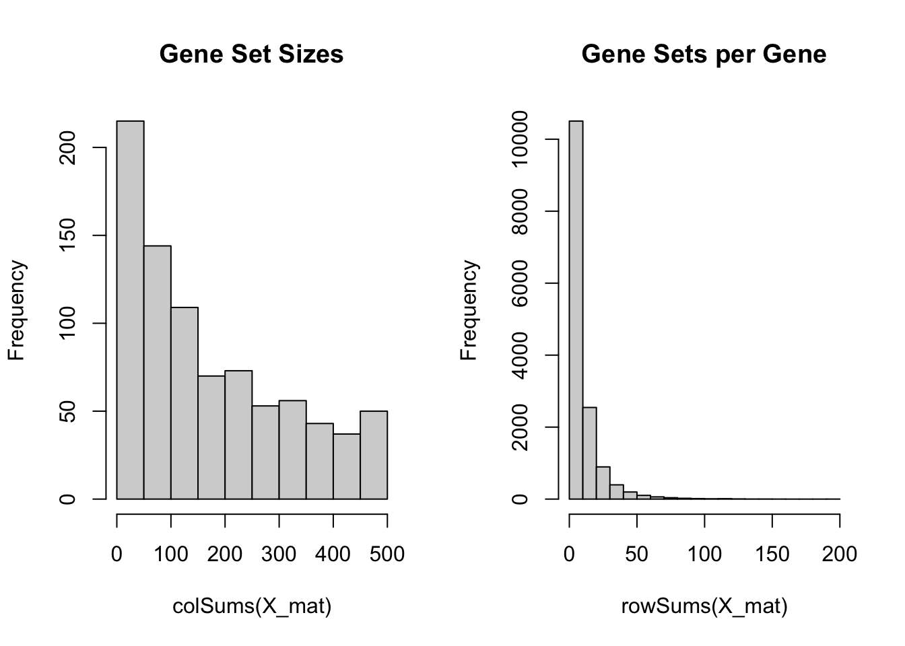
hist(rowSums(X_mat), breaks = seq(0, 200, by=1), xlim = c(0, 100), main='Gene Sets per Gene')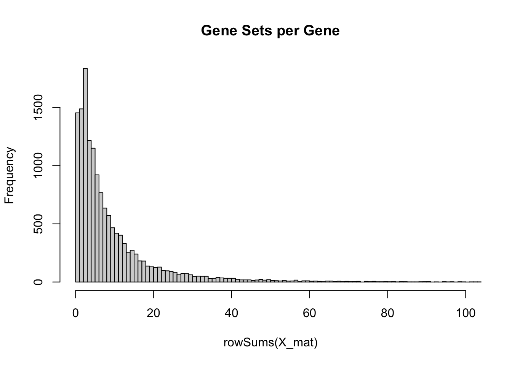
hist(colSums(X_mat), main = 'Gene Set Sizes')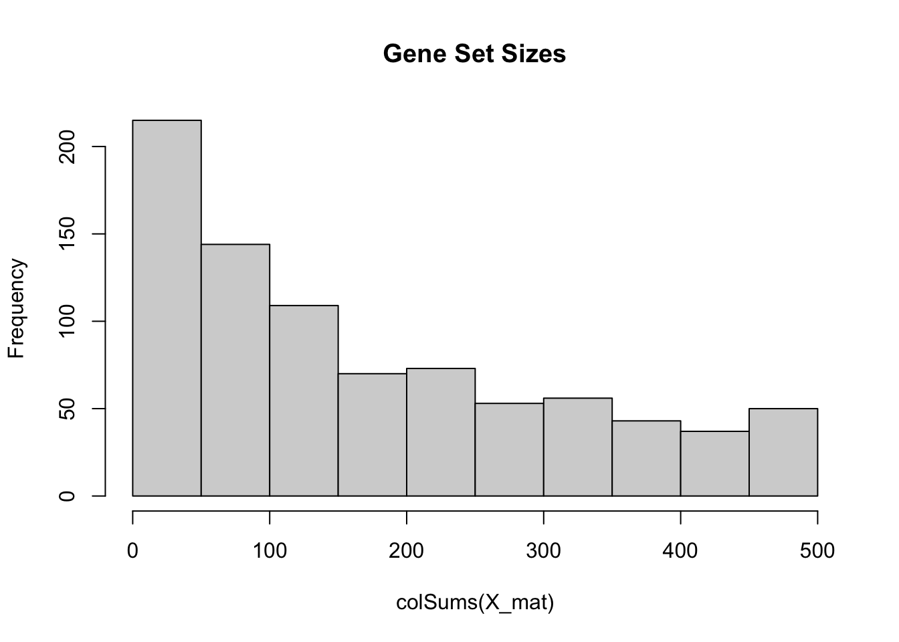
hist(rowSums(X_mat), main='Gene Sets per Gene')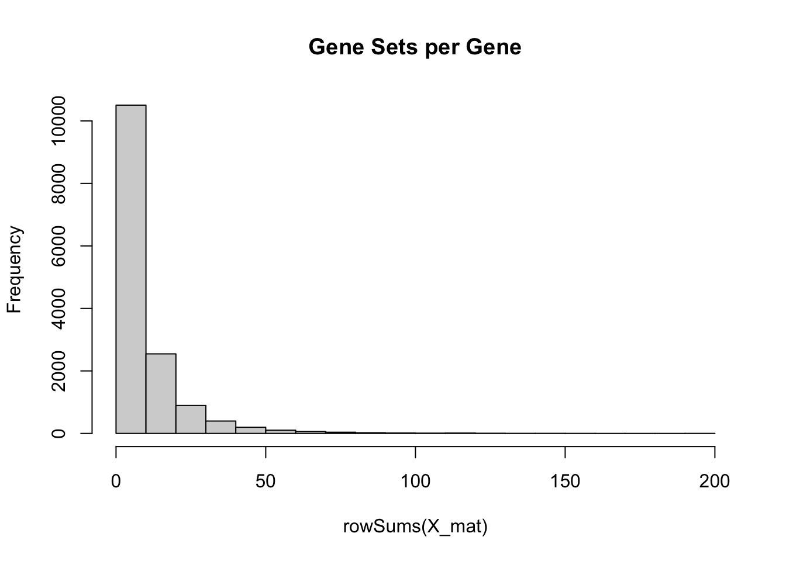
X_mat_trunc <- X_mat[, (colSums(X_mat) > 10 & colSums(X_mat) < 5000)]
hist(colSums(X_mat_trunc), main = 'Gene Set Sizes')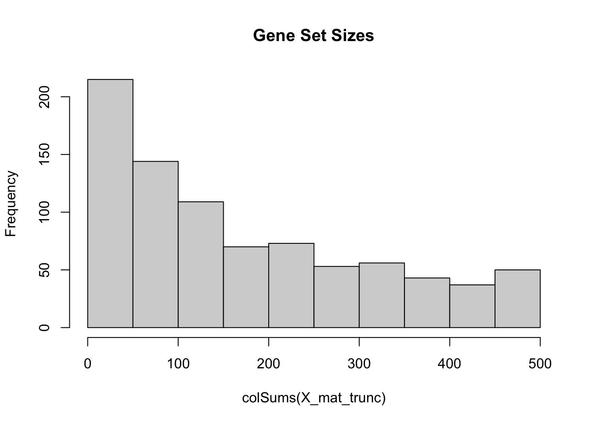
hist(rowSums(X_mat_trunc), main='Gene Sets per Gene')
X_mat_sp <- Matrix::Matrix(X_mat, sparse = T)
XX <- t(X_mat_sp) %*% X_mat_sp
image(XX)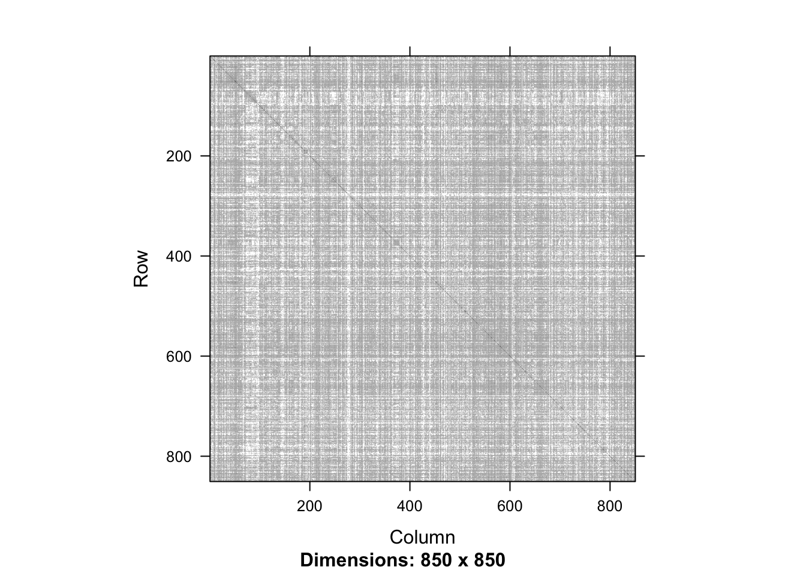
Gene set sizes vary considerably, but typical seems around 20-100. Many genes participate in multiple gene set.
First we do a simulation where there are no active gene sets. To start we use background.logit = -3 which correspond approximately with doing gene level testing and running GSEA for all genes with \(p < 0.05\).
Simulations using GO
A null simulation
First we do a simulation with no active gene sets. We set the background probability of a gene being included in the gene list at around \(0.05\). We compare how a hypergeometric test behave.
set.seed(1)
sim.rep <- generate.sim.data.rep(X=X_mat, L=0, background.logit = -3, inner.rep = 2, outer.rep = 100)
p <- './cache/null.sim.ora.rds'
ora.result <- run.ora.rep.cached(sim.rep, file=p)
p <- './cache/null.sim.rds'
susie.result <- run.susie.rep.cached(sim.rep, file=p)geneSetSizes <- geneSet %>% group_by(geneSet) %>% summarise(size = length(gene))
ora.result %>%
mutate(geneSetSizeBin = cut(size, include.lowest = T, breaks=quantile(size, probs=seq(0, 1, by=0.1), ))) %>%
select(geneSet, geneSetSizeBin, nlog10p) %>%
ggplot(aes(x=geneSetSizeBin, y=nlog10p)) + geom_boxplot()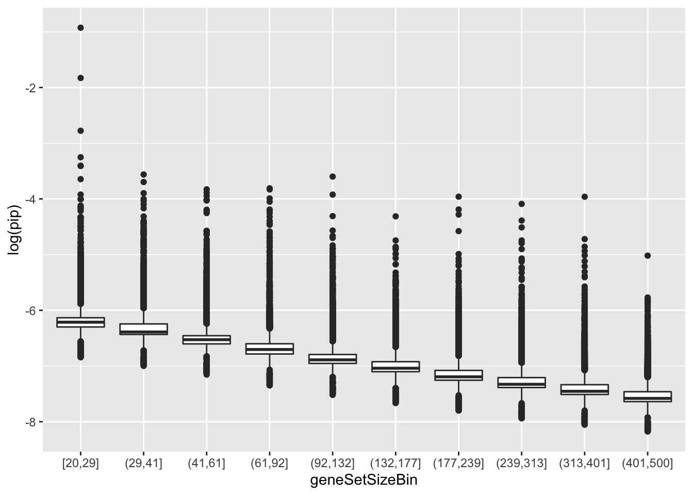
qqman::qq(ora.result$pValue)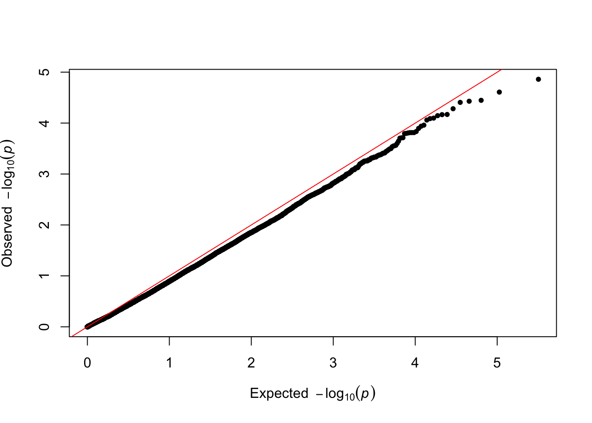
P values are just slightly deflated for hypergeometric p values. I think you would expect this due to overlap, since the tests are not independent. Although this is quite different from what you might see in real data where genes are often correlated. In this case you would expect the test to be anti-conservative.
susie.result <- susie.result %>% inner_join(geneSetSizes)Joining, by = "geneSet"susie.result %>%
mutate(geneSetSizeBin = cut(size, include.lowest = T, breaks=quantile(size, probs=seq(0, 1, by=0.1)))) %>%
select(geneSet, geneSetSizeBin, pip) %>%
ggplot(aes(x=geneSetSizeBin, y=log(pip))) + geom_boxplot()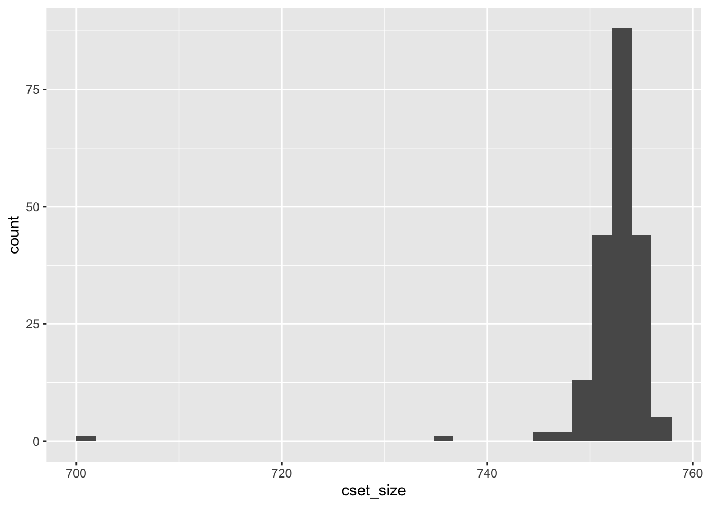
SuSiE tends to give smaller gene sets slightly larger PIP. This makes sense, it is more likely that a small gene set gets a higher proportion of genes than background by chance. Not a problem with Fisher. Hypergeometric distribution with fewer samples (corresponding with a smaller gene set) have higher variance, and the pvalues reflect that.
cset.summary <- compute.cset.sizes(susie.result, alpha=0.95)
cset.summary %>% ggplot(aes(x=cset_size)) + geom_histogram()`stat_bin()` using `bins = 30`. Pick better value with `binwidth`.Good to see that in all the simulations we did not get any cases where logistic SuSiE returns small credible sets.
ora.result %>%
mutate(geneSetSizeBin = cut(size, include.lowest = T, breaks=quantile(size, probs=seq(0, 1, by=0.1), ))) %>%
select(geneSet, geneSetSizeBin, enrichmentRatio) %>%
ggplot(aes(x=geneSetSizeBin, y=enrichmentRatio)) + geom_boxplot()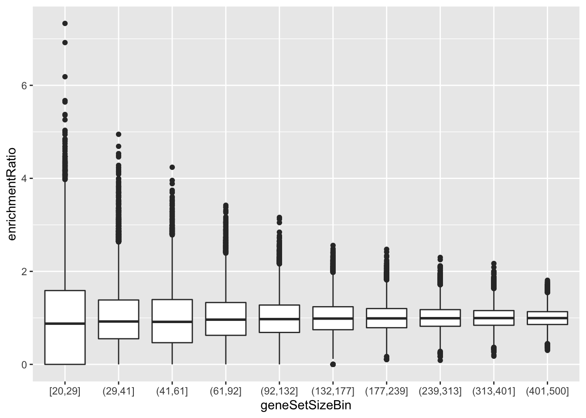
One active gene set
Next we simulate one active gene set. Genes in the active gene set will be included in the gene list active.logit = -2 with probability \(p = 0.12\). Since the gene set is small relative to the background gene set, most of the genes included in the list are junk.
set.seed(1)
sim.rep <- generate.sim.data.rep(X=X_mat, L=1, background.logit = -3, active.logit = -2, inner.rep = 2, outer.rep = 100)
p <- './cache/fist.sim.ora.rds'
ora.result <- run.ora.rep.cached(sim.rep, file = p, recompute = T)
p <- './cache/fist.sim.rds'
susie.result <- run.susie.rep.cached(sim.rep, file=p)
plot.fdr.power <- function(df, color){
return(geom_path(data = df, aes(x=eFDR, y=power, color=color)))
}
ggplot() + plot.fdr.power(susie.result, 'SuSiE') + plot.fdr.power(ora.result, 'Hypergeometric')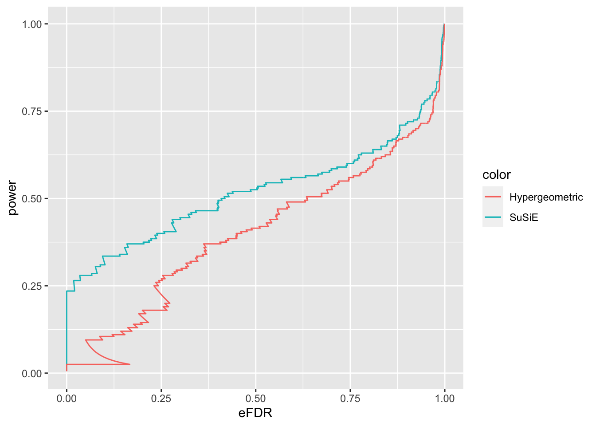
So logistic SuSiE PIPs do a better job prioritizing active gene sets then hypergeometric p values.
compute.cset.size.single.effect<- function(susie.result, col, alpha=0.95){
susie.cset <- susie.result %>%
group_by(inner.rep, outer.rep) %>%
arrange(desc(!!as.name(col))) %>%
mutate(cset_mass = cumsum(!!as.name(col)), total_active = sum(active)) %>%
filter(cumall((cset_mass - !!as.name(col) <= alpha) | (cset_mass == min(cset_mass)))) %>%
summarise(cset_size= length(cset_mass), num_active = sum(active), total_active=max(total_active), min_post_alpha = min(!!as.name(col)))
return(susie.cset)
}
compute.cset.sizes <- function(susie.result, alpha=0.95){
cols <- colnames(select(susie.result, contains("post_alpha")))
results <- c()
for (col in cols){
col.result <- compute.cset.size.single.effect(susie.result, col, alpha) %>% mutate(component = col)
results <- rbind(results, col.result)
}
return(results)
}
cset.summary <- compute.cset.sizes(susie.result, alpha=0.95)
# cset.summary <- susie.result %>%
# filter(active) %>%
# left_join(cset.summary) %>%
# group_by(inner.rep, outer.rep) %>%
# filter(post_alpha1 > min_post_alpha) %>%
# summarise(sum(active)) %>%
# left_join(cset.summary)
cset.summary %>% ggplot(aes(x=cset_size)) + geom_histogram()`stat_bin()` using `bins = 30`. Pick better value with `binwidth`.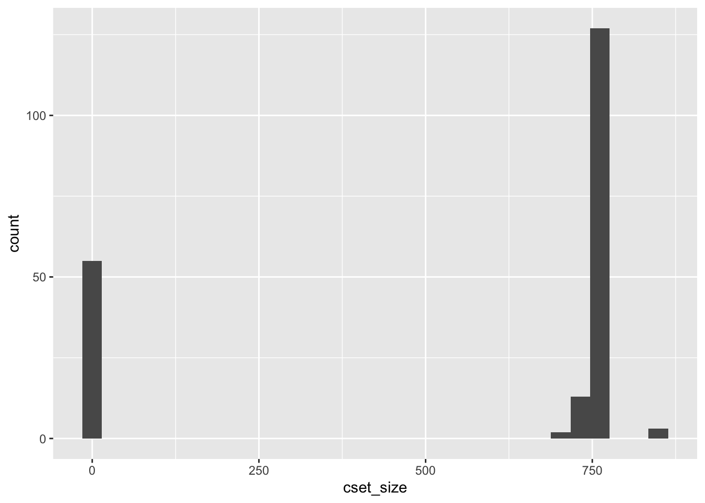
Most of the credible sets with less than 100 are of size 1.
susie.result %>%
compute.cset.sizes(., alpha=0.95) %>%
filter(cset_size < 100) %>% group_by(cset_size) %>%
summarise(mean(num_active > 0))# A tibble: 2 x 2
cset_size `mean(num_active > 0)`
* <int> <dbl>
1 1 0.962
2 2 1 The singleton credible sets have appropriate coverage, so thats good.
Simulation with multiple active gene sets
Now we in each simulation we select 5 active gene sets.
set.seed(3)
sim.rep <- generate.sim.data.rep(X=X_mat, L=5, background.logit = -3, active.logit = -2, inner.rep = 2, outer.rep = 100)
ora.result <- run.ora.rep(sim.rep)
p <- './cache/L5-1.sim.rds'
susie.result1 <- run.susie.rep.cached(sim.rep, L=1, file=p)
ggplot() + plot.fdr.power(susie.result, 'green') + plot.fdr.power(ora.result, 'blue')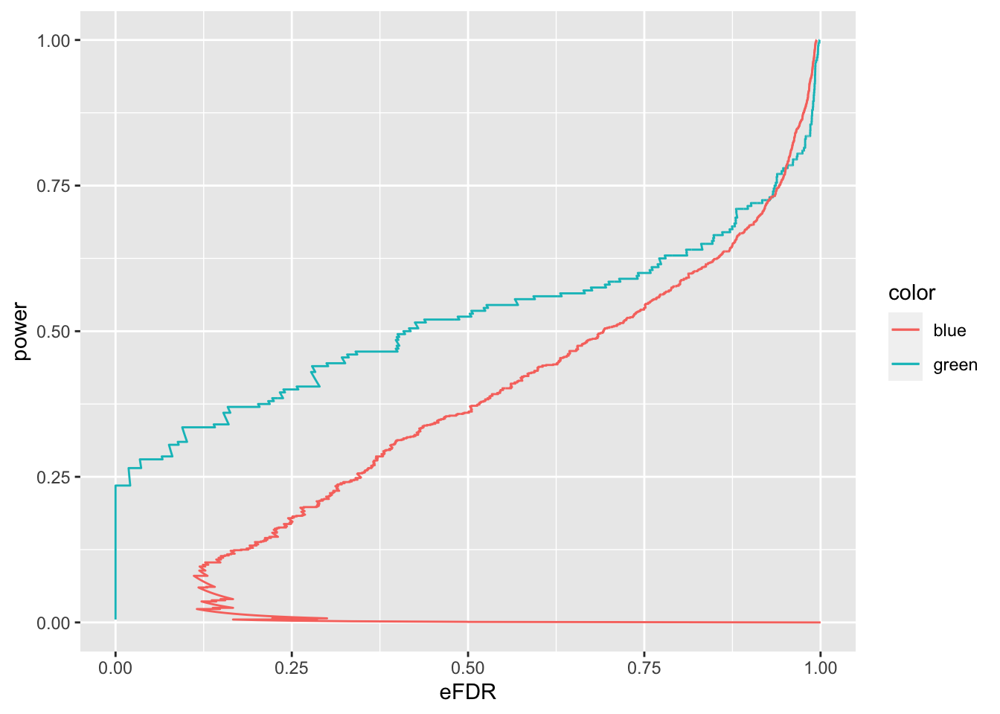
p <- './cache/L5-5.sim.rds'
susie.result5 <- run.susie.rep.cached(sim.rep, L=5, file=p)
ggplot() + plot.fdr.power(susie.result1, 'SuSiE_L1') + plot.fdr.power(susie.result5, 'SuSiE_L5') + plot.fdr.power(ora.result, 'ORA') 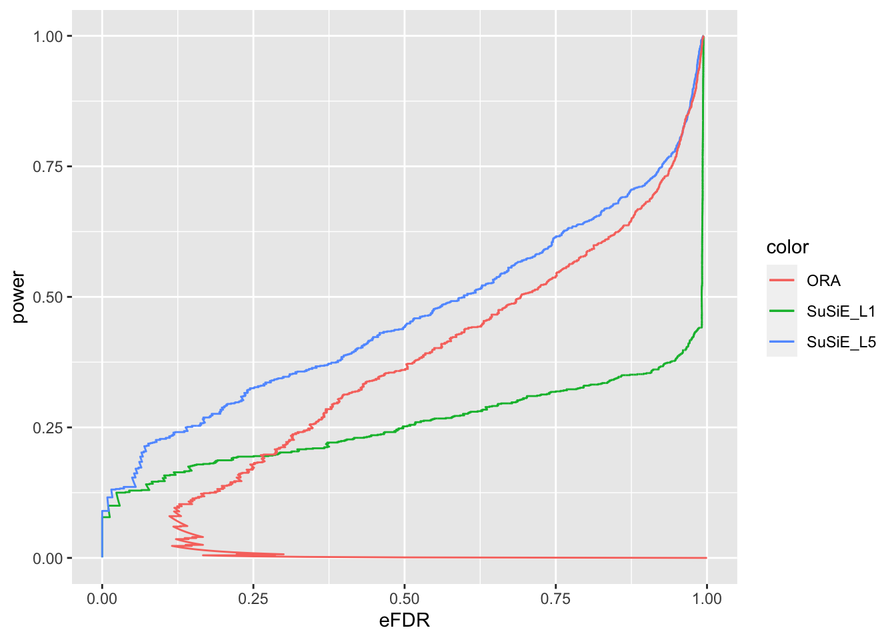
cset.summary <- compute.cset.sizes(susie.result5, alpha=0.95)
cset.summary <- susie.result %>%
filter(active) %>%
left_join(cset.summary) %>%
group_by(inner.rep, outer.rep) %>%
filter(post_alpha1 > min_post_alpha) %>%
summarise(sum(active)) %>%
left_join(cset.summary)Joining, by = c("inner.rep", "outer.rep")
Joining, by = c("inner.rep", "outer.rep")susie.result1 %>% compute.cset.sizes(., alpha=0.99) %>% filter(cset_size < 100) %>% ggplot(aes(x=cset_size)) + geom_histogram()`stat_bin()` using `bins = 30`. Pick better value with `binwidth`.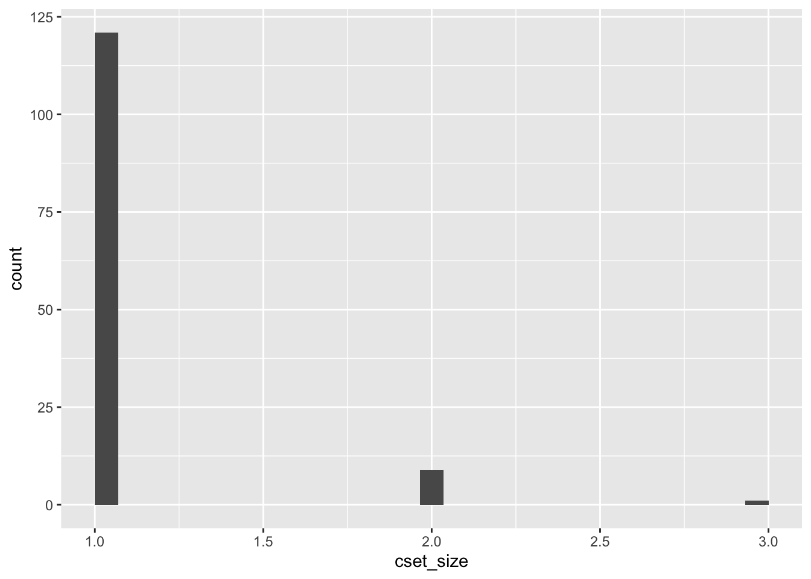
susie.result5 %>% compute.cset.sizes(., alpha=0.99) %>% filter(cset_size < 100) %>% ggplot(aes(x=cset_size)) + geom_histogram()`stat_bin()` using `bins = 30`. Pick better value with `binwidth`.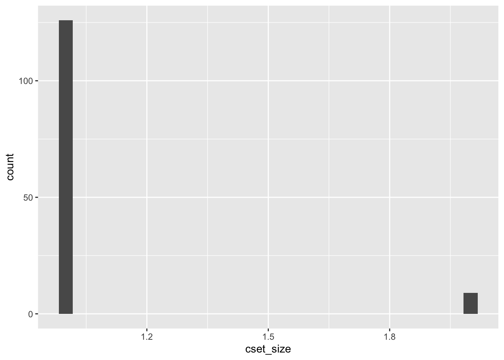
susie.result1 %>%
compute.cset.sizes(., alpha=0.95) %>%
filter(cset_size < 100) %>% group_by(cset_size) %>%
summarise(mean(num_active > 0))# A tibble: 2 x 2
cset_size `mean(num_active > 0)`
* <int> <dbl>
1 1 0.959
2 2 1 susie.result5 %>%
compute.cset.sizes(., alpha=0.95) %>%
filter(cset_size < 100) %>% group_by(cset_size) %>%
summarise(mean(num_active > 0))# A tibble: 2 x 2
cset_size `mean(num_active > 0)`
* <int> <dbl>
1 1 0.969
2 2 1 A simulation with varried bacgkround enrichment
Next lets vary the frequency of background genes that make it into the list.
set.seed(3)
background.logits = seq(-8, -2, by=1)
sim.rep <- lapply(
background.logits,
function(b) generate.sim.data.rep(X=X_mat, L=1, background.logit = b, active.logit = -2, inner.rep = 2, outer.rep = 20)
)
sim.rep <- do.call("rbind", sim.rep)
ora.result <- run.ora.rep(sim.rep)
ora.result <- ora.result %>%
group_by(background.logit) %>%
arrange(desc(nlog10p)) %>% # when there is a tie,
#arrange(desc(nlog10p), !active) %>% # when there is a tie,
mutate(TP = cumsum(active), FP = cumsum(!active), power=TP/sum(active), eFDR= FP / (FP + TP))
p <- './cache/increase.background.sim.rds'
susie.result <- run.susie.rep.cached(sim.rep, L=1, file=p)
susie.result <- susie.result %>%
group_by(background.logit) %>%
arrange(desc(pip)) %>%
mutate(TP = cumsum(active), FP = cumsum(!active), power=TP/sum(active), eFDR= FP / (FP + TP))
df <- rbind(
susie.result %>% mutate(method='SuSiE') %>% select(method, inner.rep, outer.rep, background.logit, power, eFDR),
ora.result %>% mutate(method='Hypergeometric') %>% select(method, inner.rep, outer.rep, background.logit, power, eFDR))
df %>% ggplot() + facet_wrap(facets=vars(background.logit)) + geom_path(aes(x=eFDR, y=power, color=method))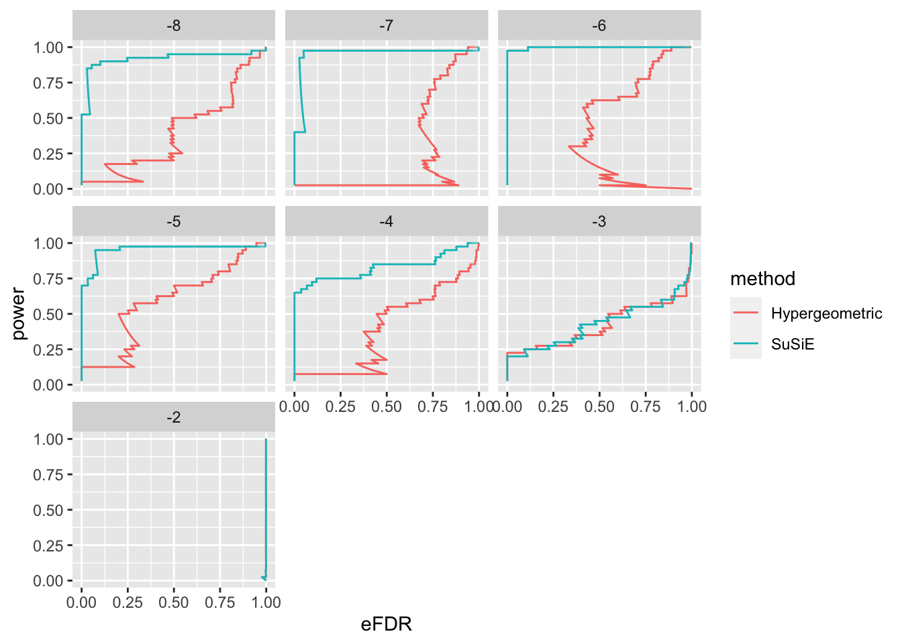
ora.result2 <- ora.result %>%
group_by(background.logit) %>%
arrange(desc(nlog10p), !active) %>% # when there is a tie,
mutate(TP = cumsum(active), FP = cumsum(!active), power=TP/sum(active), eFDR= FP / (FP + TP))
df <- rbind(
susie.result %>% mutate(method='SuSiE') %>% select(method, inner.rep, outer.rep, background.logit, power, eFDR),
ora.result2 %>% mutate(method='Hypergeometric') %>% select(method, inner.rep, outer.rep, background.logit, power, eFDR))
df %>% ggplot() + facet_wrap(facets=vars(background.logit)) + geom_path(aes(x=eFDR, y=power, color=method))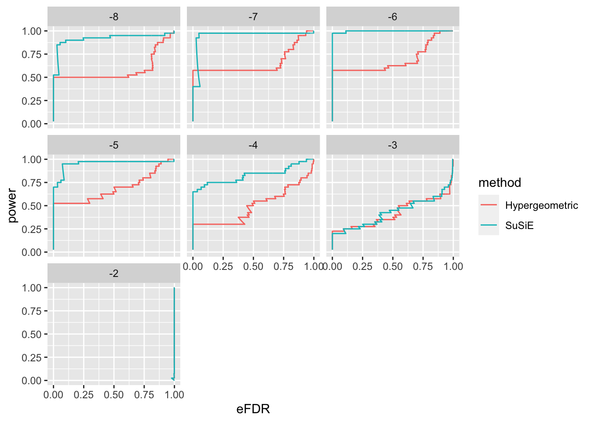
SuSiE seems to do a better job compared to hypergeometric. Although I think we need to up the simulation size considerably to get a clear picture. -3 is the same simulation scenario as the first simulation. Our expectation is that the models should perform best at -8 where the observed gene lists are drawn entirely from the active gene set and -2.
Overall logistic SuSiE seems more robust to increasing background noise. It’s not obvious to me that this should be the case. The intercept term should capture the probability of background genes making it into the list, so if the active gene set is only slightly enriched in the gene list, it would correspond to a pretty small effect size. Perhaps the advantage we are seeing here would go away if we redid the simulation on non-overlapping gene sets.
Simulations with varying overlap among gene sets
generate.X.overlap <- function(gs.size, stride, n.genes){
roll <- function( x , n ){
if( n == 0 )
return( x )
c( tail(x,n) , head(x,-n) )
}
x1 <- c(rep(1, gs.size), rep(0, n.genes-gs.size))
X_overlap <- sapply(seq(0, n.genes - gs.size, by=stride), function(shift) roll(x1, shift))
rownames(X_overlap) <- paste('gene', seq(1:dim(X_overlap)[1]), sep = '')
colnames(X_overlap) <- paste('gs', seq(1:dim(X_overlap)[2]), sep='')
return(X_overlap)
}Simulation with no overlap
set.seed(3)
X_overlap <- generate.X.overlap(10, 10, 1000)
sim.rep <- lapply(
background.logits,
function(b) generate.sim.data.rep(X=X_overlap, L=1, background.logit = b, active.logit = -2, inner.rep = 2, outer.rep = 20)
)
sim.rep <- do.call("rbind", sim.rep)
ora.result <- run.ora.rep(sim.rep)
ora.result <- ora.result %>%
group_by(background.logit) %>%
arrange(desc(nlog10p)) %>% # when there is a tie,
mutate(TP = cumsum(active), FP = cumsum(!active), power=TP/sum(active), eFDR= FP / (FP + TP))
p <- './cache/increase.background.no.overlap.sim.rds'
susie.result <- run.susie.rep.cached(sim.rep, L=1, file=p, recompute=F)
susie.result <- susie.result %>%
group_by(background.logit) %>%
arrange(desc(pip)) %>%
mutate(TP = cumsum(active), FP = cumsum(!active), power=TP/sum(active), eFDR= FP / (FP + TP))
df <- rbind(
susie.result %>% mutate(method='SuSiE') %>% select(method, inner.rep, outer.rep, background.logit, power, eFDR),
ora.result %>% mutate(method='Hypergeometric') %>% select(method, inner.rep, outer.rep, background.logit, power, eFDR))
df %>% ggplot() + facet_wrap(facets=vars(background.logit)) + geom_path(aes(x=eFDR, y=power, color=method))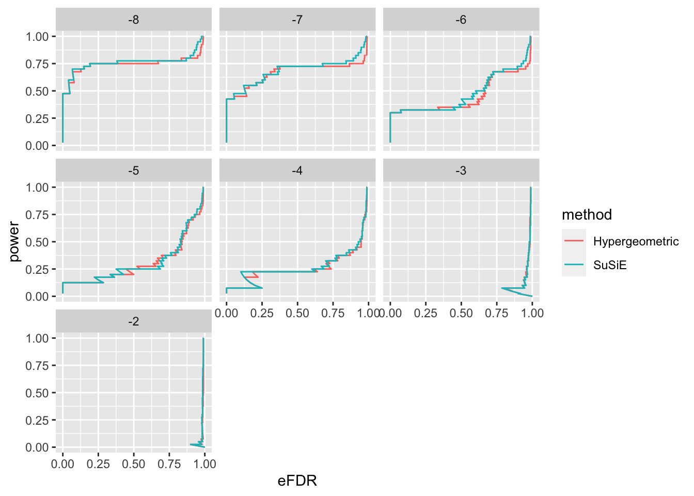
When there is no overlap in the gene sets ORA performs virtually the same. So it seems that the improvement we see from ORA to logistic SuSiE has to do with better prioritizing overlapping gene sets.
Null simulation increasing overlap
set.seed(10)
strides <- seq(2, 10, by = 2)
sim.rep <- lapply(
strides,
function(s) generate.sim.data.rep(
X=generate.X.overlap(10, s, 1000), L=0, background.logit = -3, inner.rep = 2, outer.rep = 20, annotations=list(overlap=10-s))
)
sim.rep <- do.call("rbind", sim.rep)
ora.result <- run.ora.rep(sim.rep)
susie.result <- run.susie.rep.cached(sim.rep, maxit = 20, file='./cache/null.overlap.sim.rds', recompute = T)
geneSetSizes <- geneSet %>% group_by(geneSet) %>% summarise(size = length(gene))
ora.result %>%
ggplot(aes(x=factor(overlap), y=nlog10p)) + geom_boxplot()Warning: Removed 28139 rows containing non-finite values (stat_boxplot).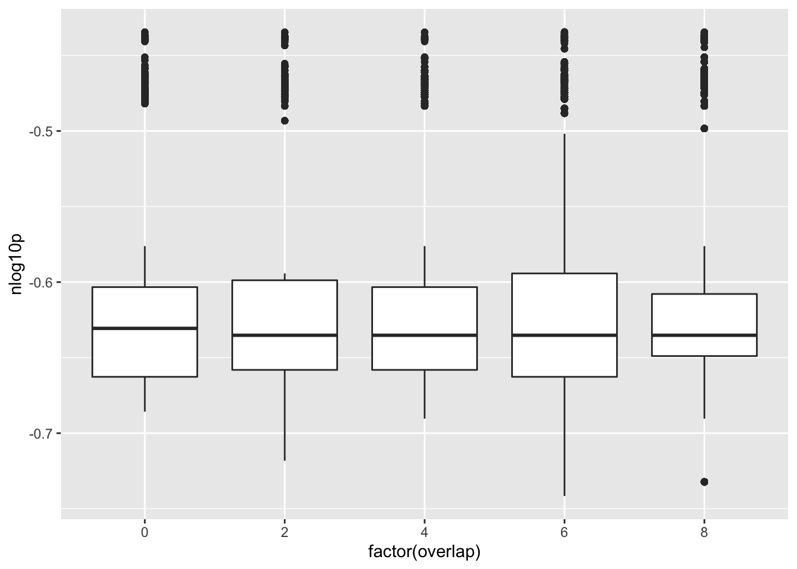
susie.result %>%
ggplot(aes(x=factor(overlap), y=pip)) + geom_boxplot()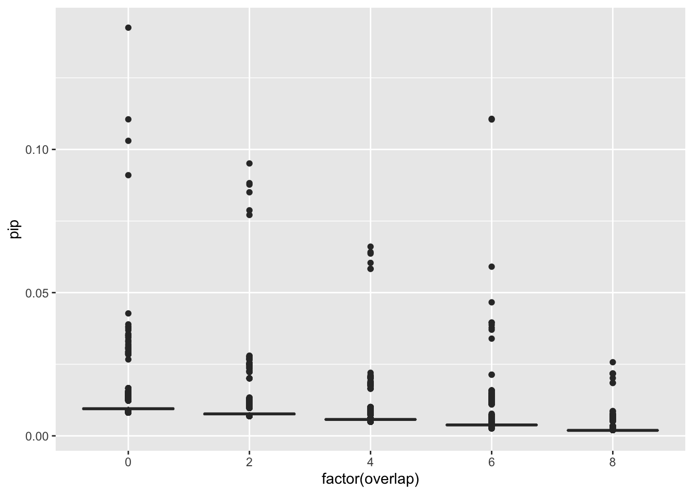
This is verifying expected behavior. As the amount of overlap in gene sets increase, SuSiE returns smaller PIPs
Increasing overlap, \(\pi_0 \approxi 0.25\), \(\pi = 1\)
set.seed(10)
strides <- seq(2, 10, by = 2)
sim.rep <- lapply(
strides,
function(s) generate.sim.data.rep(
X=generate.X.overlap(10, s, 1000), L=1, background.logit = -1, active.logit=10, inner.rep = 2, outer.rep = 20, annotations=list(overlap=10-s))
)
sim.rep <- do.call("rbind", sim.rep)
ora.result <- run.ora.rep(sim.rep)
susie.result <- run.susie.rep.cached(sim.rep, maxit = 20, file='./cache/overlap.sim.rds', recompute = T)
geneSetSizes <- geneSet %>% group_by(geneSet) %>% summarise(size = length(gene))
ora.result <- ora.result %>%
group_by(overlap) %>%
arrange(desc(nlog10p)) %>%
mutate(TP = cumsum(active), FP = cumsum(!active), power=TP/sum(active), eFDR= FP / (FP + TP))
susie.result <- susie.result %>%
group_by(overlap) %>%
arrange(desc(pip)) %>%
mutate(TP = cumsum(active), FP = cumsum(!active), power=TP/sum(active), eFDR= FP / (FP + TP))
df <- rbind(
susie.result %>% mutate(method='SuSiE') %>% select(method, inner.rep, outer.rep, background.logit, power, eFDR, overlap),
ora.result %>% mutate(method='Hypergeometric') %>% select(method, inner.rep, outer.rep, background.logit, power, eFDR, overlap))
df %>% ggplot() + facet_wrap(facets=vars(overlap)) + geom_path(aes(x=eFDR, y=power, color=method))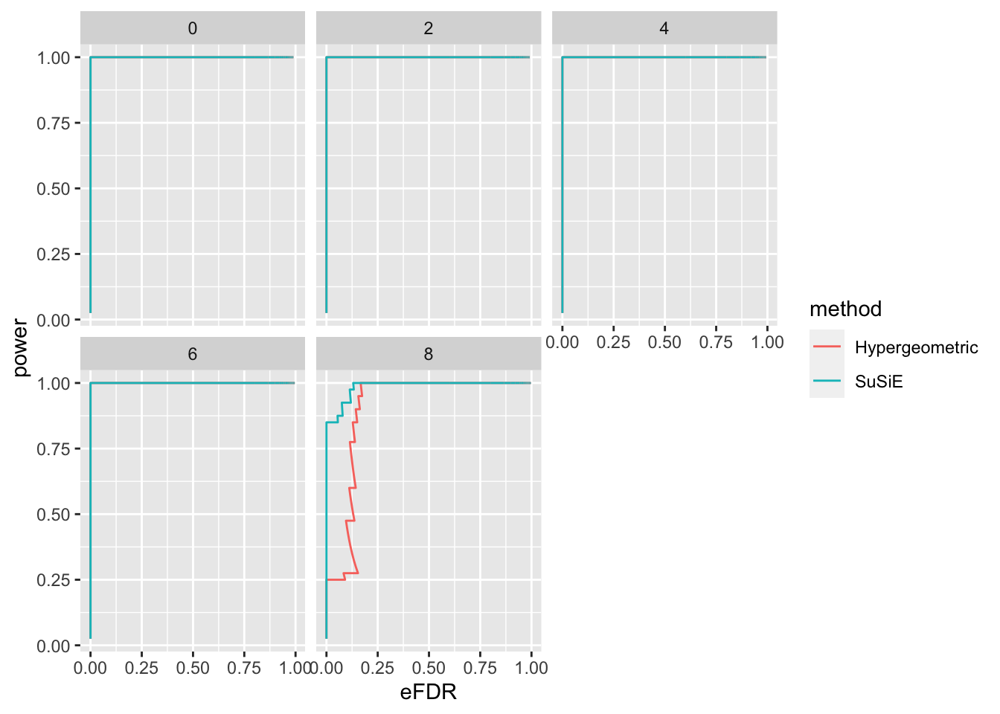
susie.result1 %>% compute.cset.sizes(., alpha=0.99) %>% filter(cset_size < 100) %>% ggplot(aes(x=cset_size)) + geom_histogram()`stat_bin()` using `bins = 30`. Pick better value with `binwidth`.
When the active gene sets is completely included in the gene list both do well. We see that logistic SuSiE does a bit better when there is lots of overlap.
Increasing overlap, \(\pi_0 \approxi 0.12\), \(\pi aprox 0.73\)
set.seed(10)
strides <- seq(2, 10, by = 2)
sim.rep <- lapply(
strides,
function(s) generate.sim.data.rep(
X=generate.X.overlap(10, s, 1000), L=1, background.logit = -2, active.logit=1, inner.rep = 2, outer.rep = 20, annotations=list(overlap=10-s))
)
sim.rep <- do.call("rbind", sim.rep)
ora.result <- run.ora.rep(sim.rep)
susie.result <- run.susie.rep.cached(sim.rep, maxit = 20, file='./cache/overlap.sim.rds', recompute = T)
geneSetSizes <- geneSet %>% group_by(geneSet) %>% summarise(size = length(gene))
ora.result <- ora.result %>%
group_by(overlap) %>%
arrange(desc(nlog10p)) %>%
mutate(TP = cumsum(active), FP = cumsum(!active), power=TP/sum(active), eFDR= FP / (FP + TP))
susie.result <- susie.result %>%
group_by(overlap) %>%
arrange(desc(pip)) %>%
mutate(TP = cumsum(active), FP = cumsum(!active), power=TP/sum(active), eFDR= FP / (FP + TP))
df <- rbind(
susie.result %>% mutate(method='SuSiE') %>% select(method, inner.rep, outer.rep, background.logit, power, eFDR, overlap),
ora.result %>% mutate(method='Hypergeometric') %>% select(method, inner.rep, outer.rep, background.logit, power, eFDR, overlap))
df %>% ggplot() + facet_wrap(facets=vars(overlap)) + geom_path(aes(x=eFDR, y=power, color=method))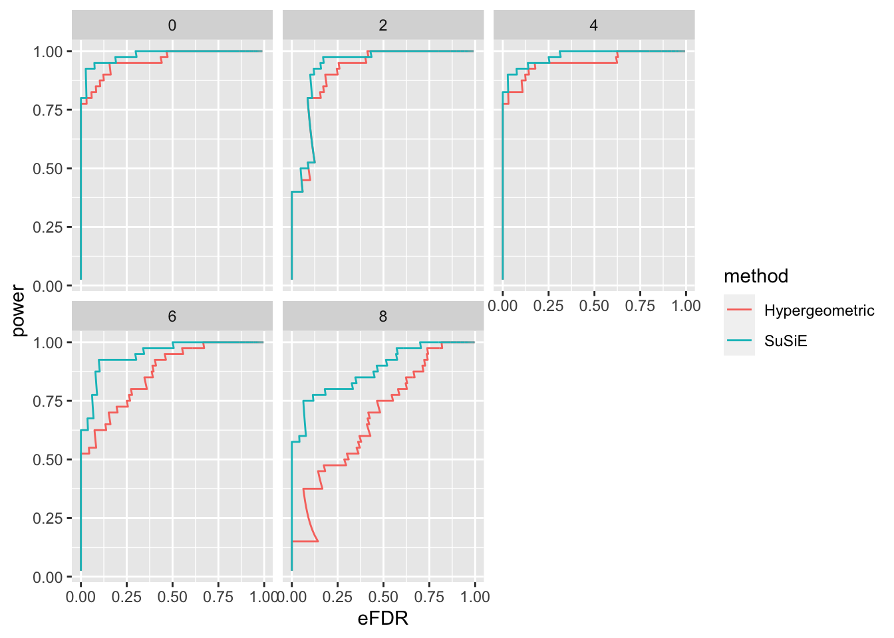
susie.result1 %>% compute.cset.sizes(., alpha=0.99) %>% filter(cset_size < 100) %>% ggplot(aes(x=cset_size)) + geom_histogram()`stat_bin()` using `bins = 30`. Pick better value with `binwidth`.Different parameters to make the simulation a bit more challenging.
knitr::knit_exit()